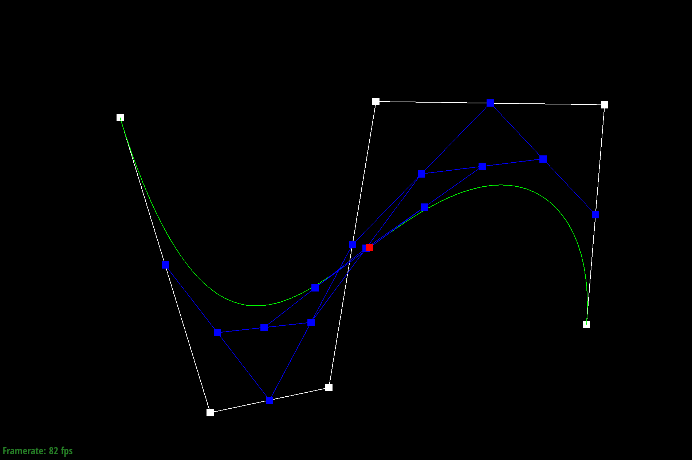
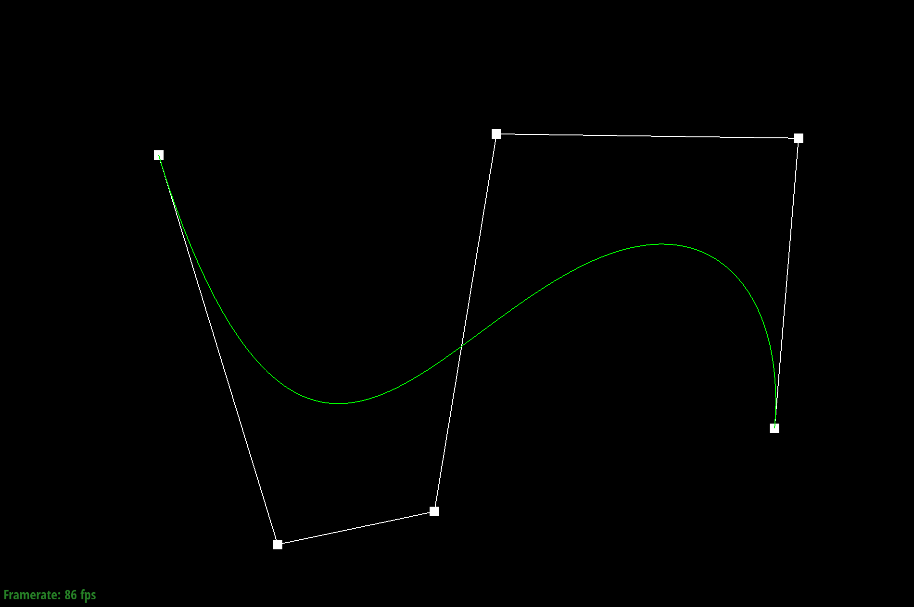

Step 6

Final Curve

Modified t
In this project I implemented Bezier curves and surfaces using de Casteljau subdivision. I also implemented smoothing of meshes with averaged normals, as well as loop subdivision for upsampling meshes.
Step 0
Step 1
Step 2
Step 3
Step 4
Step 5
Step 6
Final Curve
Modified t
Given a Bezier curve with n control points, we can apply de Casteljau's algoritm to repeatedly compute linear interpolations between the points to end up with a smooth curve. We do this by adding lines between neighboring pairs of lines between control points at position t. We then repeat the process with the calculated new lines until we end up with just one point, which becomes a point on the Bezier curve.
To do this, I used a for loop to call lerp on every pair of adjacent control points. Each new calculated point is added to the vector array and the process continues until there is only one point left.
Different Control Points
Mesh Teapot
Bezier surfaces can be represented as a series of Bezier curves lined up. We can use de Casteljau's algorithm to calculate the control point of each curve in one dimension with our u variable, before linearly interpolating in the other direction with the input v.
This is done by evaluating the control points one row at a time in the u dimension. This determines the Bezier curves. We then evaluate the u points at t in the v direction, creating the final Bezier surface.
I used a HalfedgeCIter object to keep track of the starting halfedge, looping until we eventually come back to the start. Halfedge objects have a pointer to a trianglar face with 3 vertices. By following the halfedge's next() and position pointers we can get the positions of all 3 vertices of the face. I then took the cross product of the difference between adjacent vectors and added that to the sum. I then move on to the next surface by accessing the halfedge's twin() then next() pointer. When the loop is finished, the normalized vector of the sum is returned.

To implement this feature I labeled all the vertices and edges before and after an edge flip, as well as noted the changes in face. It was very helpful to draw a diagram and label everything before and after a flip. I assigned all the initial vertices, faces, halfedges, and edges to variables. Then I reassigned the pointers using setNeighbors to change them to the vertices, halfedges, edges, and faces after the flip.
I ran into some bugs that involved holes in my mesh, but I solved it by updating the faces after flipping.
Once again I labeled the different verticies and edges before any splitting, then reassigned them after the split. This involved adding a vertex, 2 faces, 3 edges, and 6 halfedges to the mesh.

No Upsampling
Upsampling x1
Upsampling x2
Upsampling x3
Loop subdivision was implemented by calculating new positions for the mesh vertices. To do this I iterated through the old vertices and updated their positions by using the weighted positions of their neighbors. I then calculated the new vertex positions by apply the formula 3/8 * (A + B) + 1/8 * (C + D). The mesh's original edges were then split and the new vertices were assigned the position calculated in the previous steps. Afterwards, all edges with one new and one old vertex were flipped, and the positions of all the vertices were updated.
As you can see from the cow mesh above, loop subdivision creates a smoother mesh. The sharp edges are rounded out as the positions are updated to be the weighted average of the positions of nearby vertices. As a result of this, nearby vertices that are farther apart have a much more drastic change in position compared to nearby vertices that are close together. This means that the less dense vertices are in a mesh, the more smoothing.
To reduce this effect, we can pre-split the edges so that vertices are closer together, which will reduce the amount of smoothing we get.
Before Pre-Splitting:
No Upsampling
Upsampling x1
Upsampling x2
Upsampling x3
After Pre-Splitting:
No Upsampling
Upsampling x1
Upsampling x2
Upsampling x3
Notice that the mesh after pre-splitting is also symetrical, compared to the mesh without. This is because the mesh before pre-splitting was not completely symetrical as vertices had different numbers of neighbors. This causes the cube to become asymetical as the number of neighbors of a vertex affects the change in position.
Before Pre-Splitting:
No Upsampling
Upsampling x1
After Pre-Splitting:
No Upsampling
Upsampling x1
One bug I ran into was where I forgot to store the starting value of the halfedge before iterating on it in a do while loop. This caused a very interesting and slightly creepy looking mesh after loop subdivision:
Interesting Bug